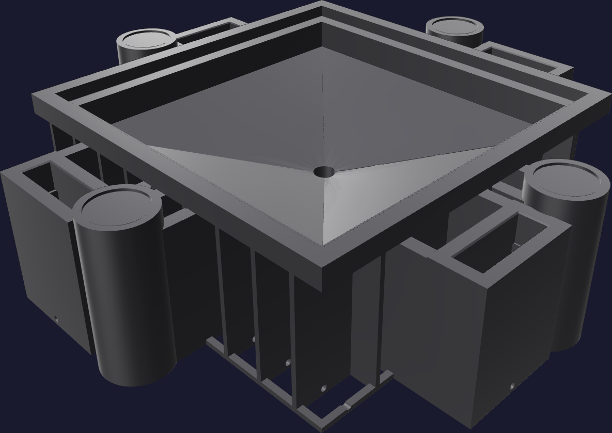

Print · plate 29
The cavity
The half you pour into. It prints opening up, exactly as it sits on the bench, so the forming skin is built on ribs and the whole backing structure opens downward to the bed. 37 h 40 m · 1,271 g · 466 layers.

What the structure is for
The skin that forms the funnel is only 3.2 mm thick, carried on 2.4 mm ribs at 20 mm centres. The bays between those ribs are not infill the slicer skipped — they are modelled open volume, and transverse 3 mm channels connect them to the outside so chamber pressure reaches them. A printed mold is porous; the ribs and channels equalise it, and the coating is what actually seals it.
⚠ Plan the spool before you press go
1,271 g on a 1 kg spool. Automatic backup, or a supervised
change at around hour 30.